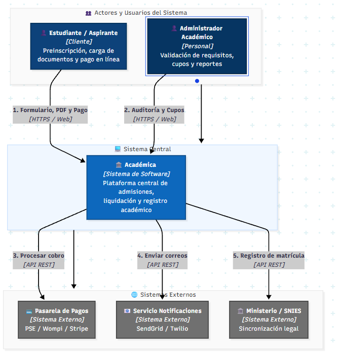
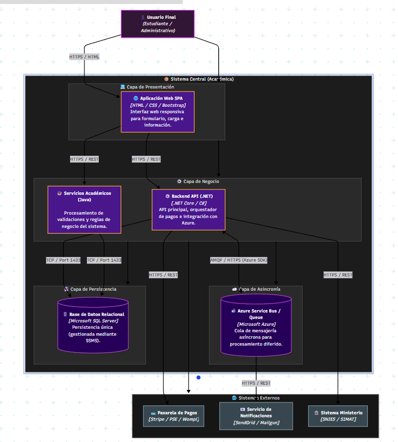
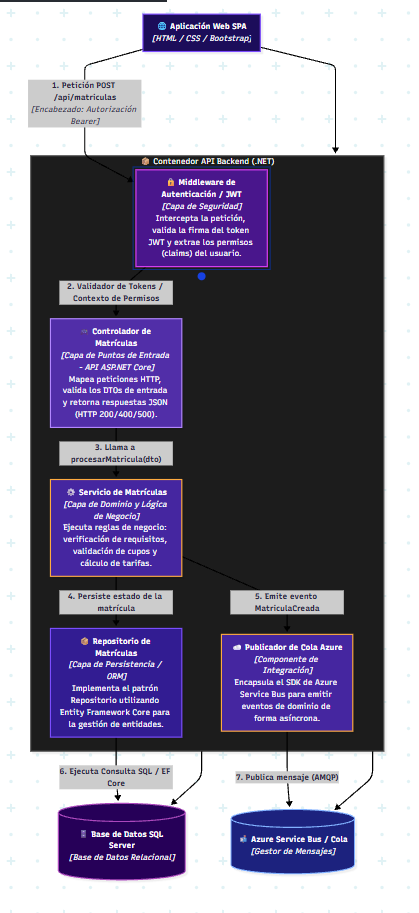
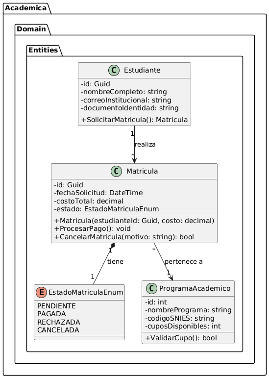

Definición del Problema
Las aplicaciones web monolíticas tradicionales presentan cuellos de botella severos ante altos volúmenes de solicitudes concurrentes durante periodos de matrículas, lentitud en consultas por falta de memoria caché y acoplamiento excesivo entre componentes.
Propuesta de Solución
Diseño de una arquitectura web moderna, distribuida y guiada por eventos (Event-Driven) con desacoplamiento asíncrono mediante colas de mensajes, capa de persistencia híbrida (SQL Server + Redis) y empaquetamiento en contenedores Docker.
Pilares del Proyecto de Ingeniería
Criterios clave de evaluación requeridos por el facilitador
1. Arquitectura & Usabilidad
Diseño SPA con navegación fluida, estructuración de contenidos y estándares de usabilidad web.
2. Pub/Sub Mensajería
Patrones de publicación/suscripción asíncrona mediante Azure Service Bus para desacoplamiento.
3. Persistencia (SQL / NoSQL)
Bases de datos orientadas a colecciones (SQL Server) junto a capa de caché en memoria con Redis.
4. Contenedores & Cloud
Despliegue mediante contenedores Docker y estrategia de exposición de servicios en Azure.
Modelo de Arquitectura C4
Presiona cada pestaña para explorar los niveles y haz clic sobre el diagrama para ampliarlo

Descripción: Muestra los actores del sistema (Estudiante/Aspirante y Administrador Académico) y sus interacciones principales con la plataforma Académica y los sistemas externos (Pasarela de Pagos, Servicio de Notificaciones y Ministerio/SNIES).

Descripción: Ilustra las aplicaciones que conforman la arquitectura: Frontend SPA, Backend API (.NET Core), Servidor de Persistencia SQL Server, Capa Asíncrona (Azure Service Bus) y Servicios Exteriores.

Descripción: Desglosa los componentes internos de la Backend API (.NET): Middleware JWT, Controlador de Matrículas, Servicio de Matrículas (Lógica de Negocio), Repositorio ORM y Publicador de Cola Azure.

Descripción: Muestra el modelo de clases de dominio generado en PlantUML que define las entidades principales: Estudiante, Matrícula, Programa Académico y Estados de Matrícula.